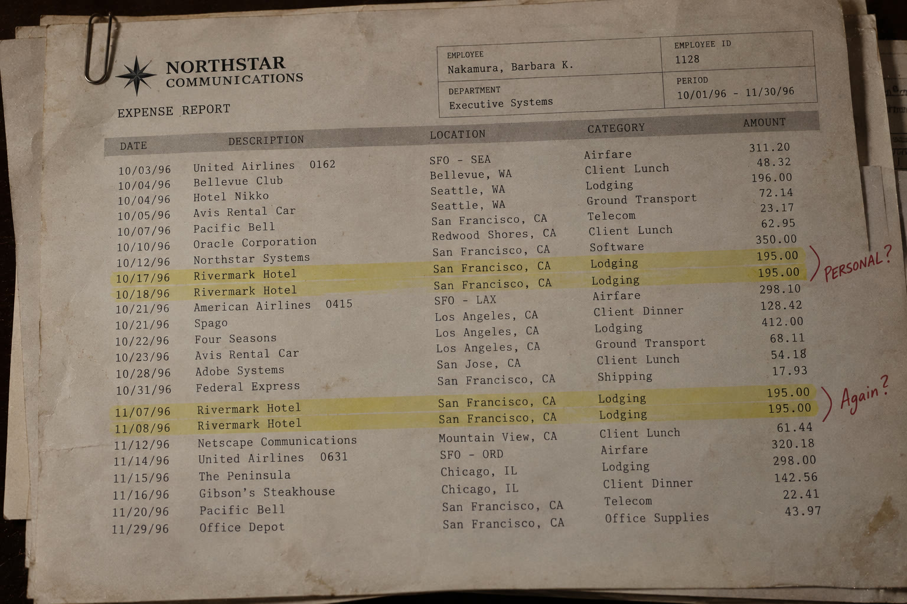
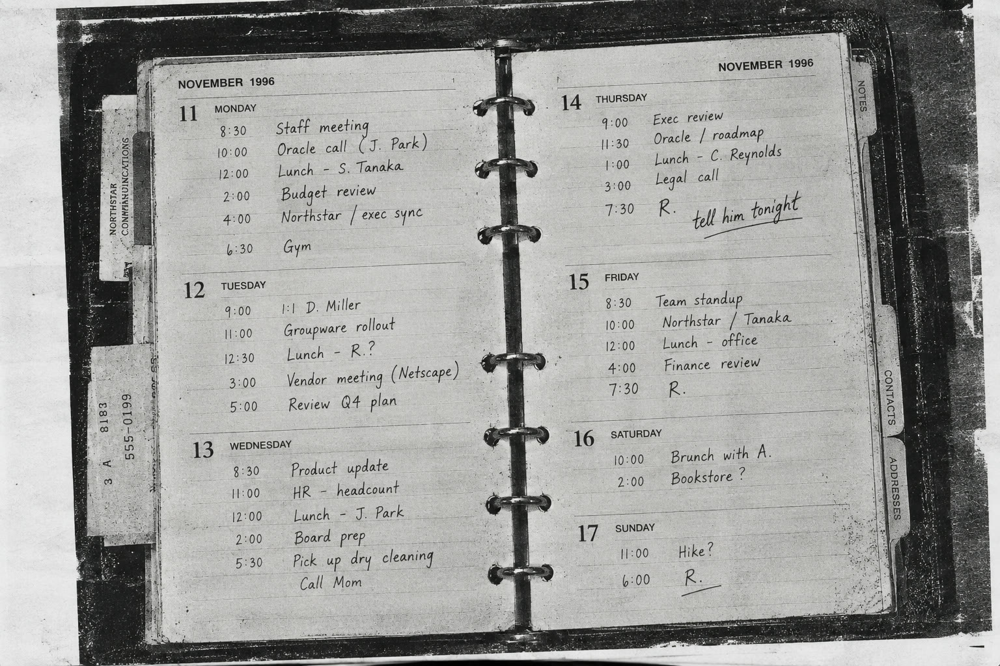

SUBJECT INFORMATION
- Name
- Barbara K. Nakamura
- Age
- 38
- Employer
- Northstar Communications
- Division
- Executive Systems
- Position
- Groupware Administrator
- Office
- Redwood City, California
- Vehicle
- 1993 Lexus ES, Blue
INCIDENT SUMMARY
Barbara K. Nakamura was last confirmed at Northstar Communications headquarters on Thursday, November 14, 1996.
Multiple employees reported seeing Nakamura in the building during normal business hours. Security records indicate that she exited the facility at approximately 6:42 PM.
Nakamura did not report for work the following morning.
No request for leave was submitted.
Calls placed to her residence on November 15 and November 16 were unanswered. Nakamura has made no known contact with Northstar personnel since leaving the facility.
Her cellular telephone has not been recovered.
LAST CONFIRMED ACTIVITY
- 6:11 PM
- Telephone call placed from office extension.
- 6:37 PM
- Office computer logged off.
- 6:42 PM
- Nakamura observed leaving Northstar headquarters.
- After 6:42 PM
- Unknown.
PRELIMINARY INQUIRY — 11/18/96
Interviews with Nakamura's immediate coworkers produced no indication that she intended to leave the company or travel unexpectedly.
Her office contained no resignation letter or personal correspondence indicating an extended absence.
Travel records initially reviewed by Northstar appear consistent with her position and responsibilities.
However, several expenses submitted during October and November could not be immediately associated with scheduled company travel.
Personnel interviewed regarding these charges could not identify a corresponding meeting or client engagement.
Supporting documentation has been retained.
ITEMS FOR REVIEW
- A.
- Expense documentation — October/November 1996
- B.
- Northstar Winter Dinner photograph
- C.
- Photocopy of personal appointment book
Who is “R.”?
ITEM A — EXPENSE DOCUMENTATION
Photocopy — Accounting Records

ITEM B — PHOTOGRAPH
Northstar Communications Winter Dinner, 1996
ITEM C — APPOINTMENT BOOK
Photocopy — Selected Pages

CORPORATE SECURITY DIVISION
- CASE
- NC-96-1147
- SUBJECT
- NAKAMURA, BARBARA K.
- CLASSIFICATION
- MISSING EMPLOYEE / UNRESOLVED
- DATE OPENED
- NOVEMBER 15, 1996
- LAST UPDATED
- DECEMBER 03, 1996

11/15/96 Opened — Corp. Security
11/18/96 Preliminary inquiry
12/02/96 Reviewed — xxxxxxxx, Legal
12/03/96 Updated